Chapter 128 Graphical parameters in R with par(): With great power comes great responsibility
library(compbio4all)128.1 Save plotting defaults
par_defaults <- par()128.2 Data
census <- 1:39
year.t <- 1959:1997
females.N <- c(44,47,46,44,46,
45,46,40,39,39,
42,39,41,40,33,
36,34,39,35,34,
38,36,37,41,39,
51,47,57,48,60,
65,74,69,65,57,
70,81,99,99)
lambda.i <- females.N[-1]/females.N[-length(females.N)]
lambda.i <- c(lambda.i,NA)
lambda_log <- log(lambda.i)
bear_N <- data.frame(census,
year.t,
females.N,
lambda.i,
lambda_log)128.3 A single-panel plot - default
plot(females.N ~ year.t, data = bear_N)
128.4 A single-panel plot - explicitly with par()
par(mfrow = c(1,1))
plot(females.N ~ year.t, data = bear_N)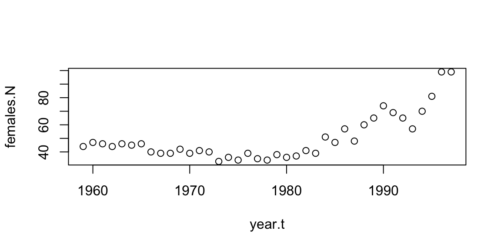
128.5 A vertical 2-panel plot - with par()
TODO doen’st like to knit
par(mfrow = c(2,1))
plot(lambda_log ~ females.N, data = bear_N)
plot(females.N ~ year.t, data = bear_N)128.6 A horizontal 2-panel plot - with par()
par(mfrow = c(1,2))
plot(lambda_log ~ females.N, data = bear_N)
plot(females.N ~ year.t, data = bear_N)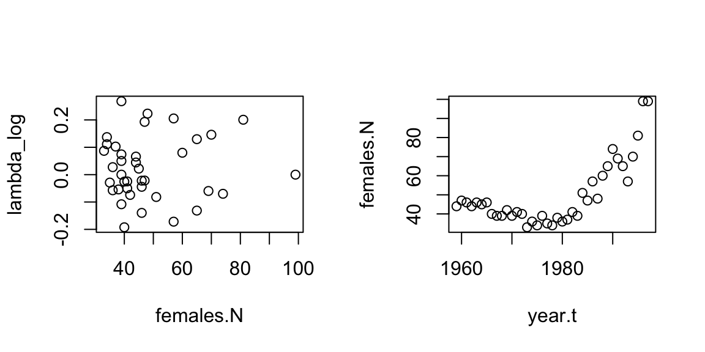
128.7 A 4-panel plot - with par()
par(mfrow = c(2,2))
plot(lambda_log ~ females.N, data = bear_N)
plot(females.N ~ year.t, data = bear_N)128.8 A horizontal 2-panel plot - with par() and adjusted margins
par(mfrow = c(1,2), mar = c(4,4,1,1))
plot(lambda_log ~ females.N, data = bear_N)
plot(females.N ~ year.t, data = bear_N)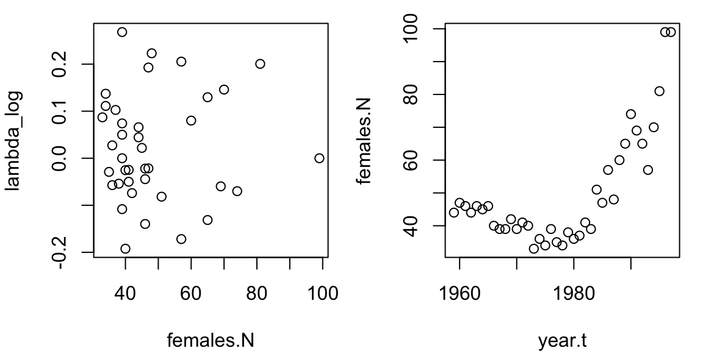
128.9 Reset defaults
This fails - why
par(par_defaults)Things to cover boxplot - base, qplot, ggplot boxplot ordered histogram scatterplot scatterplot w/vert/hort/1:1 scatterplot with regression lines scatterplot with spline smoother
scatterplot matrix
128.10 Reference
Martin, TE. 1995. Avian Life History Evolution in Relation to Nest Sites, Nest Predation, and Food. Ecological Monographs. http://onlinelibrary.wiley.com/doi/10.2307/2937160/full
Abstract: “Food limitation is generally thought to underlie much of the variation in life history traits of birds. I examined variation and covariation of life history traits of 123 North American Passeriformes and Piciformes in relation to nest sites, nest predation, and foraging sites to examine the possible roles of these ecological factors in life history evolution of birds. Annual fecundity was strongly inversely related to adult survival, even when phylogenetic effects were controlled. Only a little of the variation in fecundity and survival was related to foraging sites, whereas these traits varied strongly among nest sites. Interspecific differences in nest predation were correlated with much of the variation in life history traits among nest sites, although energy trade—offs with covarying traits also may account for some variation. For example, increased nest predation is associated with a shortened nestling period and both are associated with more broods per year, but number of broods is inversely correlated with clutch size, possibly due to an energy trade—off. Number of broods was much more strongly correlated with annual fecundity and adult survival among species than was clutch size, suggesting that clutch size may not be the primary fecundity trait on which selection is acting. Ultimately, food limitation may cause trade—offs between annual fecundity and adult survival, but differences among species in fecundity and adult survival may not be explained by differences in food abundance and instead represent differing tactics for partitioning similar levels of food limitation. Variation in fecundity and adult survival is more clearly organized by nest sites and more closely correlated with nest predation; species that use nest sites with greater nest predation have shorter nestling periods and more broods,yielding higher fecundity, which in turn is associated with reduced adult survival. Fecundity also varied with migratory tendencies; short—distance migrants had more broods and greater fecundity than did neotropical migrants and residents using similar nest sites. However, migratory tendencies and habitat use were confounded, making separation of these two effects difficult. Nonetheless, the conventional view that neotropical migrants have fewer broods than residents was not supported when nest site effects were controlled.”
##Load Martin 1995 data
library(compbio4all)
data(martin1995)
martin <- martin1995
library(ggplot2)Change the “non-excavating” group to “secondary cavity”
martin$group <- gsub("non-excavating","2ndary cav.",martin$group)Change the “group-nesting” group to “ground”
martin$group <- gsub("ground-nesting","ground",martin$group)128.11 Make some more changes to shorten the group names
martin$group <- gsub("Subcanopy or canopy","subcan-/canopy",martin$group)
martin$group <- gsub("shrub or low foliage","shrub",martin$group)
martin$group <- gsub("excavating","excav",martin$group)Classify general lattitudinal region as tropical, boreal, or temperate
martin$trop.or.temp <- "temperate"
i.tropics <- which(martin$lat < 23)
i.boreal <- which(martin$lat > 54)
martin$trop.or.temp[i.tropics] <- "tropics"
martin$trop.or.temp[i.boreal] <- "boreal"128.11.1 How do I put two plots next to each other using ggplot?
Oneliner
128.11.2 How do I add a regression line to a scatterplot with ggplot?
Oneliner
qplot(y = pred,
x = nest.dur,
data = martin,
geom = c("smooth","point"),
method = "lm")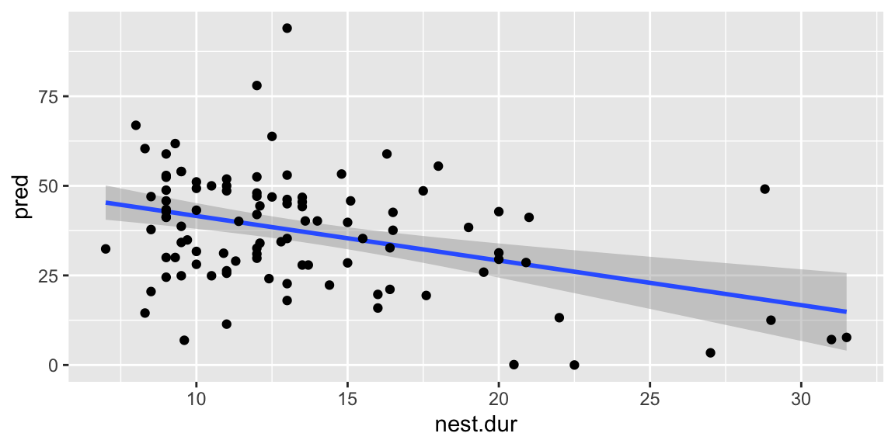
qplot(y = pred, x = nest.dur, data = martin,
geom = c("smooth","point"),
#se = FALSE,
method = "lm",
xlab = "xlab = nesting duration",
ylab = "ylab = predation rate",
main = "main title: predation vs. nesting duration")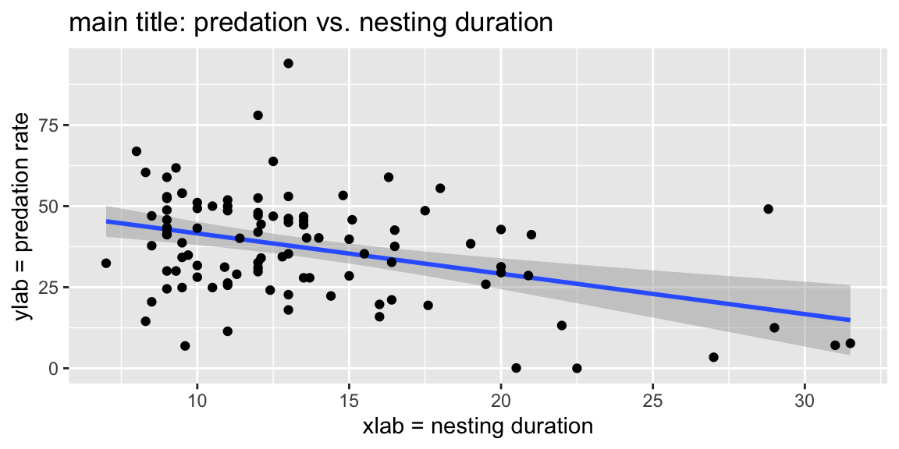
128.12 GGPLOT
library(ggplot2)
128.12.1 Increase the font size for the x and y axes in ggplot?
128.12.2 How do I increae the SIZE OF THE TICK LABELS on the x and y axes?
128.12.3 How do I increase the size of TITLES or labels on the x and y axes?
128.12.4 How do I make these things bold?
Use “theme(axis.text = element_text(size = …))” for the axis labels. Use “theme(axis.tile = element”
qplot(clutch.sz,
data = martin) +
geom_vline(xintercept = 5) +
xlab("Clutch size") +
ylab("Count") +
ggtitle("Distribution of clutch sizes, data 1992") +
theme(axis.text=element_text(size=18), #increase font size to 18
axis.title=element_text(size=22,
face="bold")) #use bold text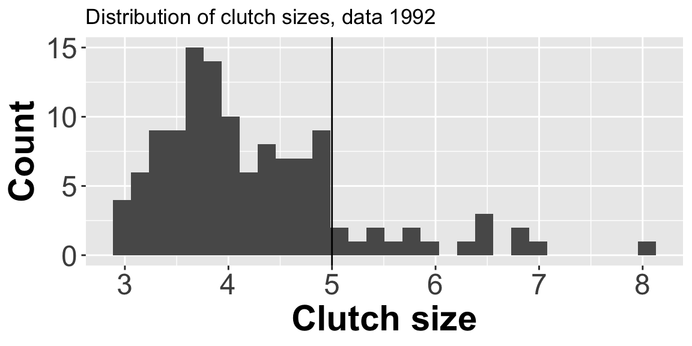
128.12.5 How do I add horizontal and vertical lines to a ggplot?
geom_hline(xintercept = 0)
geom_vline(yintercept = 0)128.12.6 How do I flip or rotate the coordinates to that the y-axis becomes the x-axis in ggplot?
coord_flip()This can be used to make coefficient plots and forests plots.
128.12.7 How do I flip the y axis so that positive values are on the opposite side in ggplot?
scale_y_reverse()128.12.8 How do I manually set the colors for the legend or scale in ggplot?
128.12.9 How do I change the colors of the legend or scale in ggplot?
scale_colour_manual(name="Experimental\nSettings",
values=colors_BeS.3,
labels=c("Greenhouse", "Greenhouse\n& Field")) 128.12.10 How do I make a confidence band around a line in ggplot?
keywords: (regression, linear model, CI, confidence interval)
geom_ribbon(aes(ymin=SE.real.minus,
ymax=SE.real.plus),
alpha=0.15,
linetype = 0)geom_ribbon(aes(ymin=SE.real.minus,
ymax=SE.real.plus),
alpha=0.15,
linetype = 0)128.12.11 How do i set the limits on the x or y axis in ggplot?
128.12.12 How do I re-name the x or y axis in ggplot?
The commands scale_x_continous() and scale_y_continous() can do several things. See also xlab() and ylab()
scale_x_continuous(name="Stem Length",limits=c(15,100)) + #Stem Length (cm)
scale_y_continuous(name="Reversion Probability")128.12.13 How do I make changes to the legend in ggplot?
128.12.14 How do I change the position of the legend in ggplot?
128.12.15 How do I change the title over the legend?
128.12.16 How do I change the font of the title of the legend in ggplot?
128.12.17 How do I change the font of the labels of the legend in ggplot?
#keywords: ggplot, legend, font, bold,
theme(
legend.position="right",
#legend.position=c(0.15, .85),
legend.title = element_text(colour="black",
size=24,
face="bold"),
legend.text = element_text(colour="black",
size = 20,
face = "bold")) +
128.12.18 How do I change the thickness of the axes in ggplot?
theme(axis.line = element_line(size=2, color = "black")) #makes axes lines thicker128.12.19 How do I get rid of/remove/suppress the box around the plotting field
# keywords: box, border, edging, around blot
theme(panel.border = element_rect(color = "white")) 128.12.19.1 How do I get rid of the box around…
# keywords: box, border, edging, around blot
theme(legend.key = element_rect(colour = 'white')) + # gets rid of box around length key items128.12.19.2 How do I get rid of the grid lines within the plot in ggplot?
theme(panel.grid.minor=element_blank(),
panel.grid.major=element_blank())
#> List of 2
#> $ panel.grid.major: list()
#> ..- attr(*, "class")= chr [1:2] "element_blank" "element"
#> $ panel.grid.minor: list()
#> ..- attr(*, "class")= chr [1:2] "element_blank" "element"
#> - attr(*, "class")= chr [1:2] "theme" "gg"
#> - attr(*, "complete")= logi FALSE
#> - attr(*, "validate")= logi TRUE128.12.19.3 How do I set the font of the axes titles?
128.12.19.4 How do I adjust the positions of the axes titles?
theme(axis.title.x = element_text(face="bold", size=32),
axis.text.x = element_text(vjust=0.95,
size=32,
face="bold"),
axis.title.y = element_text(face="bold",
size=32,
vjust=0.35),
axis.text.y = element_text(vjust=0.5,
size=32,face="bold"))
#> List of 4
#> $ axis.title.x:List of 11
#> ..$ family : NULL
#> ..$ face : chr "bold"
#> ..$ colour : NULL
#> ..$ size : num 32
#> ..$ hjust : NULL
#> ..$ vjust : NULL
#> ..$ angle : NULL
#> ..$ lineheight : NULL
#> ..$ margin : NULL
#> ..$ debug : NULL
#> ..$ inherit.blank: logi FALSE
#> ..- attr(*, "class")= chr [1:2] "element_text" "element"
#> $ axis.title.y:List of 11
#> ..$ family : NULL
#> ..$ face : chr "bold"
#> ..$ colour : NULL
#> ..$ size : num 32
#> ..$ hjust : NULL
#> ..$ vjust : num 0.35
#> ..$ angle : NULL
#> ..$ lineheight : NULL
#> ..$ margin : NULL
#> ..$ debug : NULL
#> ..$ inherit.blank: logi FALSE
#> ..- attr(*, "class")= chr [1:2] "element_text" "element"
#> $ axis.text.x :List of 11
#> ..$ family : NULL
#> ..$ face : chr "bold"
#> ..$ colour : NULL
#> ..$ size : num 32
#> ..$ hjust : NULL
#> ..$ vjust : num 0.95
#> ..$ angle : NULL
#> ..$ lineheight : NULL
#> ..$ margin : NULL
#> ..$ debug : NULL
#> ..$ inherit.blank: logi FALSE
#> ..- attr(*, "class")= chr [1:2] "element_text" "element"
#> $ axis.text.y :List of 11
#> ..$ family : NULL
#> ..$ face : chr "bold"
#> ..$ colour : NULL
#> ..$ size : num 32
#> ..$ hjust : NULL
#> ..$ vjust : num 0.5
#> ..$ angle : NULL
#> ..$ lineheight : NULL
#> ..$ margin : NULL
#> ..$ debug : NULL
#> ..$ inherit.blank: logi FALSE
#> ..- attr(*, "class")= chr [1:2] "element_text" "element"
#> - attr(*, "class")= chr [1:2] "theme" "gg"
#> - attr(*, "complete")= logi FALSE
#> - attr(*, "validate")= logi TRUE128.12.19.5 How do I drop, remove or suppress the legend in ggplot?
theme(legend.position = "none")128.12.19.6 Remove facet strip completely
http://stackoverflow.com/questions/10547487/r-removing-facet-wrap-labels-completely-in-ggplot2
theme(strip.background = element_blank(),
strip.text.x = element_blank())128.12.19.7 How do I increase the size text of the within facets?
128.12.19.8 How do I increase the font size of facet labels?
theme(strip.text.x = element_text(size = 8, colour = "orange", angle = 90))128.12.19.9 How do I reorder a factor variable for plotting in ggplot?
levs <- mult.comp.df$names.ordered[order.x]
mult.comp.df$names.ordered <- factor(mult.comp.df$names.ordered,
levels = levs)128.12.19.10 colorblind palletes
color blind palletes http://dr-k-lo.blogspot.com/2013/07/a-color-blind-friendly-palette-for-r.html http://www.cookbook-r.com/Graphs/Colors_%28ggplot2%29/
#mult.comp.df$names <- with(mult.comp.df, reorder(names, coefficients, function(x) -order(x)))
Plot clutch size versus duration of incubation using basic R plotting function
plot(surv.adult ~ clutch.sz, data = martin)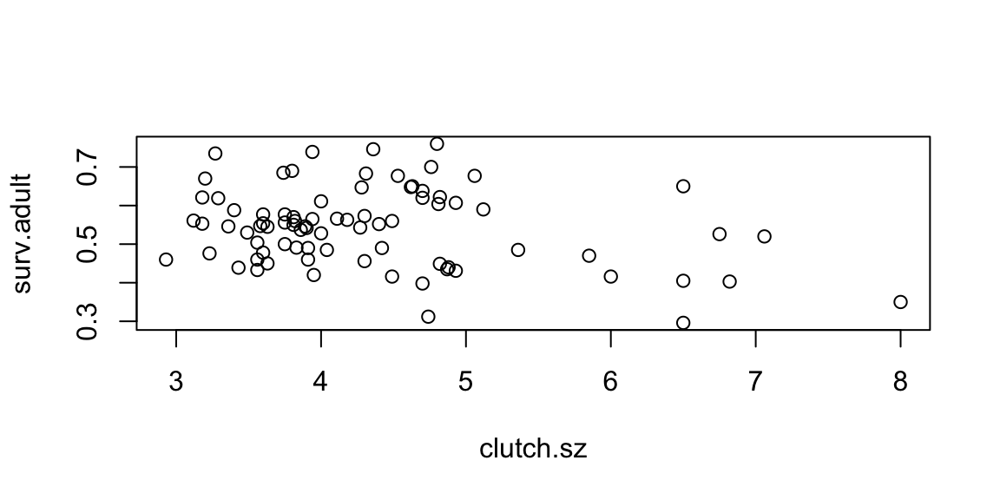
Plot distribution of survival rates
hist(martin$surv.adult)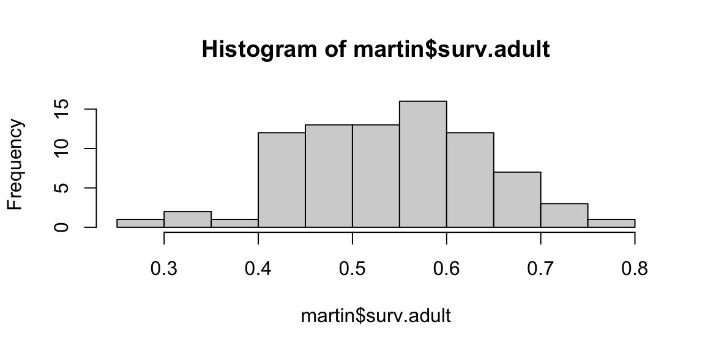
Plot distribution of clutch sizes
hist(martin$clutch.sz)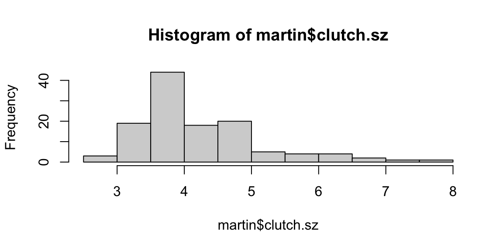
Load ggplot package
library(ggplot2)Plot distribution of clutch sizes in ggplot
qplot(clutch.sz,
data = martin)Add line at 6 for LOWA
qplot(clutch.sz,
data = martin) + geom_vline(xintercept = 5)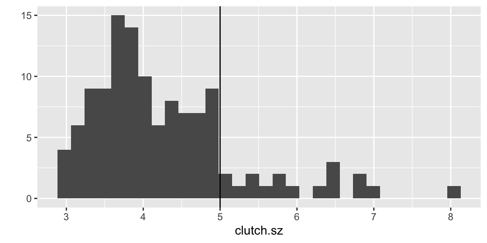
Add labels
qplot(clutch.sz,
data = martin) +
geom_vline(xintercept = 5) +
xlab("Clutch size") +
ylab("Count") +
ggtitle("Distribution of clutch sizes, data 1992")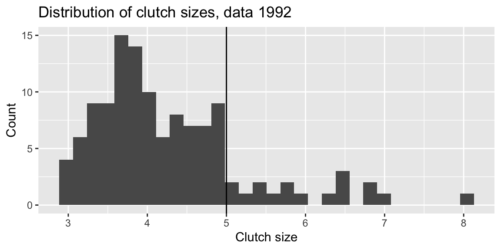
Make background white
qplot(clutch.sz,
data = martin) +
geom_vline(xintercept = 5) +
xlab("Clutch size") +
ylab("Count") +
ggtitle("Distribution of clutch sizes, data 1992") +
theme(axis.text=element_text(size=18),
axis.title=element_text(size=22,face="bold")) +
theme_bw()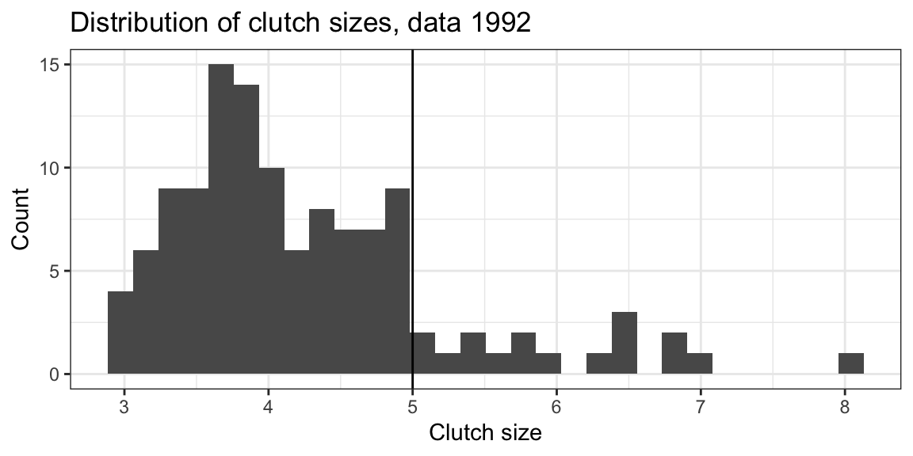
Plot as density curve
qplot(clutch.sz,
data = martin,
geom = "density") +
geom_vline(xintercept = 6) +
xlab("Clutch size") +
ylab("Count") +
ggtitle("Distribution of clutch sizes, data 1992") +
theme(axis.text=element_text(size=18),
axis.title=element_text(size=22,face="bold")) +
theme_bw()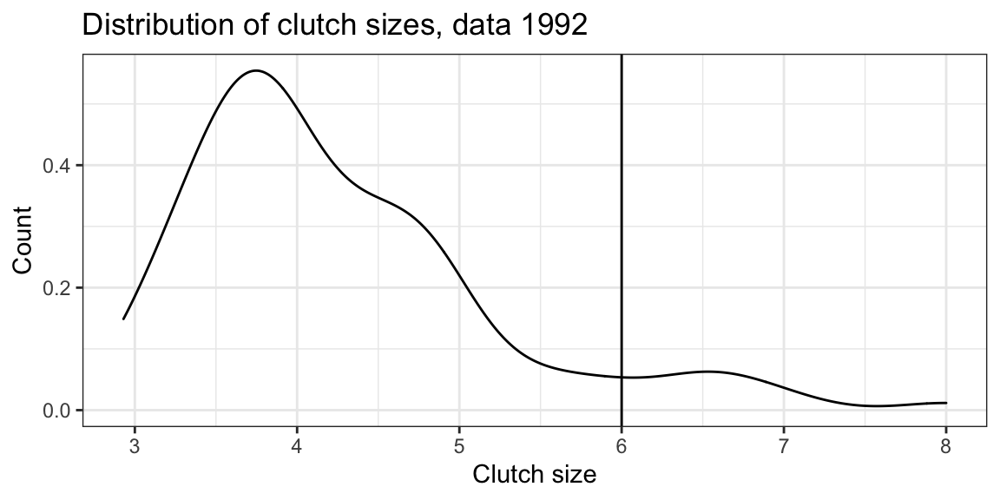
Plot as separate density curve for each nest type group
qplot(clutch.sz,
data = martin,
geom = "density",
color = group,
group = group) +
geom_vline(xintercept = 6) +
xlab("Clutch size") +
ylab("Count") +
ggtitle("Distribution of clutch sizes, data 1992") +
theme(axis.text=element_text(size=18),
axis.title=element_text(size=22,face="bold")) +
theme_bw()
Plot distribution of clutch sizes by FORAGING site
qplot(clutch.sz,
data = martin,
facets = . ~ foraging.site)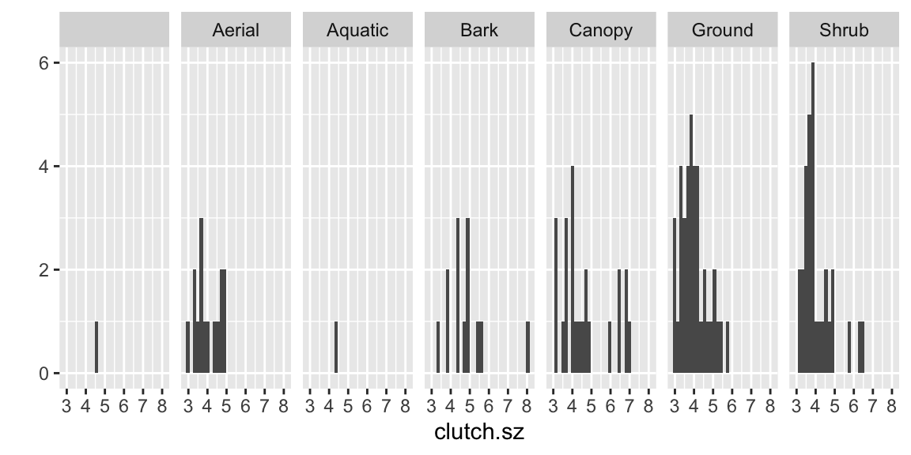
Use facet wrap
qplot(clutch.sz,
data = martin) +
facet_wrap(~foraging.site)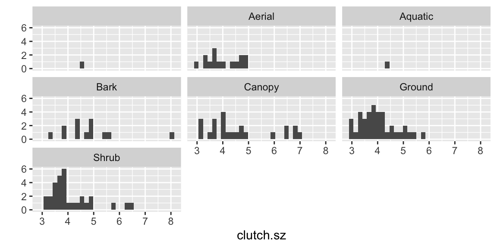
Plot distribution of clutch sizes by habitat group
qplot(clutch.sz,
data = martin,
facets = . ~ group)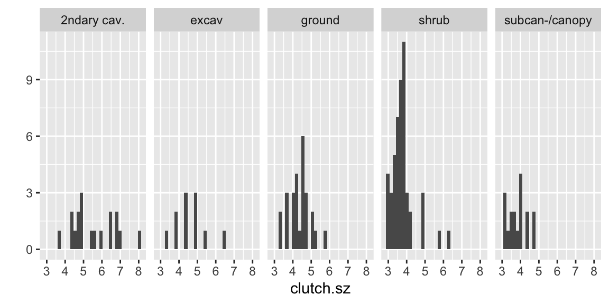
Boxplot
qplot(y = clutch.sz,
x = group,
geom = "boxplot",
data = martin) +
geom_hline(yintercept = 6)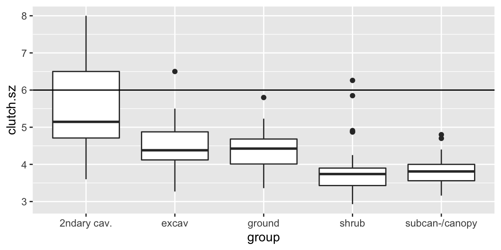
Incubation period vs. predation
qplot(y = inc.dur,
x = pred,
data = martin)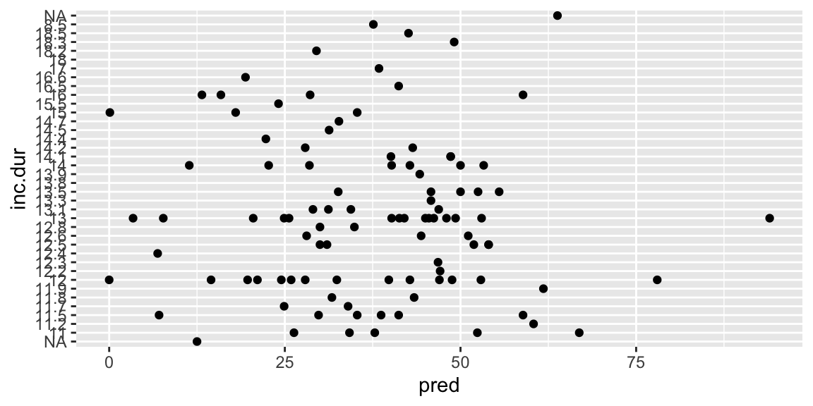
Plot adult survival versus duration of incubation in ggplot
qplot(y = surv.adult,
x = clutch.sz,
data = martin)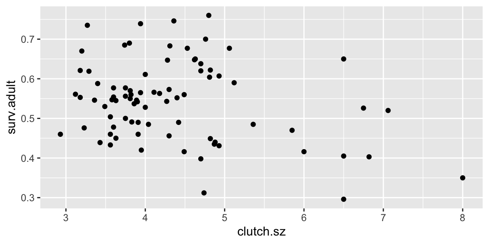
Plot adult survival versus duration of incubation in ggplot
qplot(y = surv.adult,
x = inc.dur,
data = martin)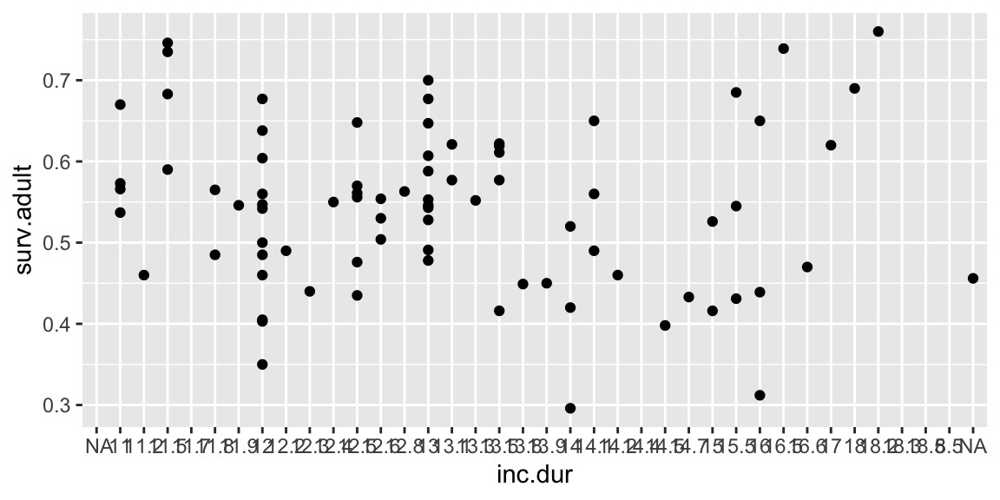
Add a trend line
qplot(y = surv.adult,
x = clutch.sz,
data = martin,
geom = c("point","smooth"))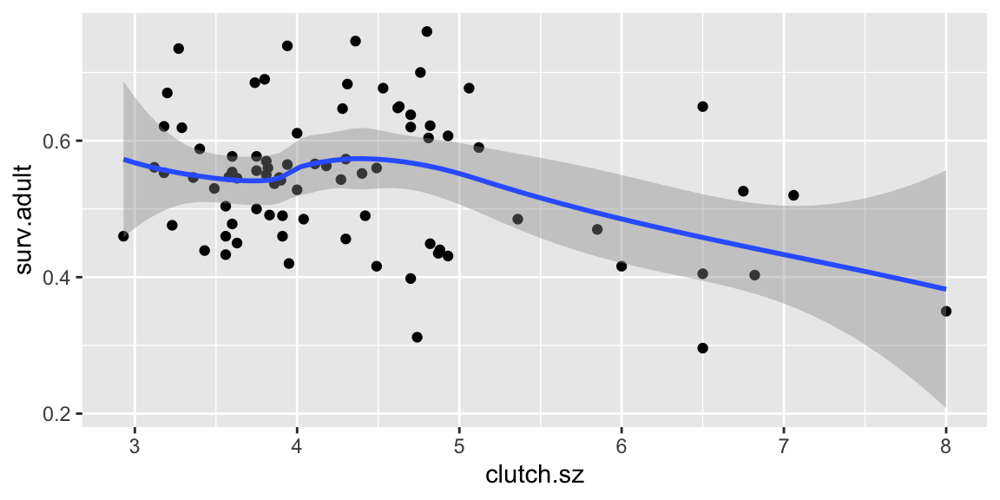
Color code each group
qplot(y = surv.adult,
x = clutch.sz,
data = martin,
color = group)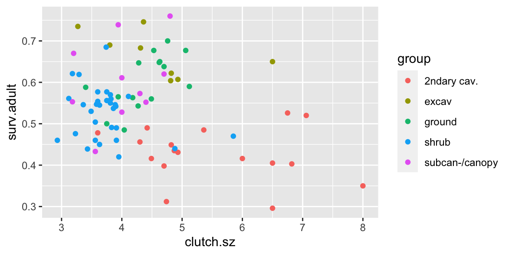
Make size of points bigger
qplot(y = surv.adult,
x = clutch.sz,
data = martin,
color = group,
size = 4)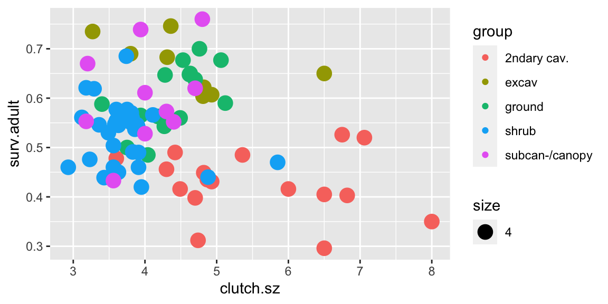
Add trend line to each group
qplot(y = surv.adult,
x = clutch.sz,
data = martin,
color = group,
geom = c("point","smooth"),
method = "lm",
se = FALSE,
size = 4)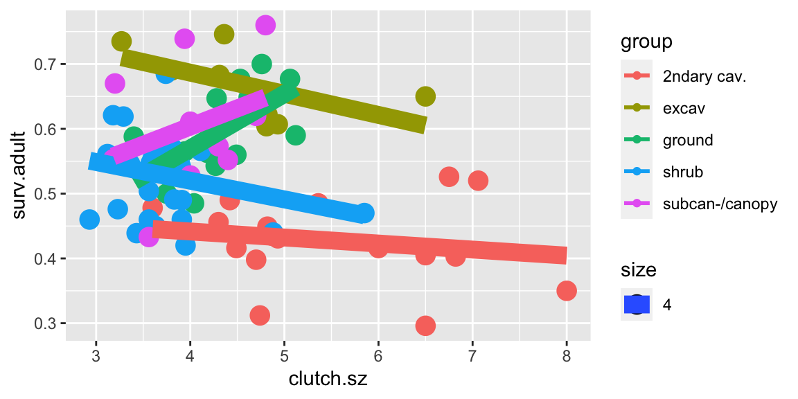
Figure out which species have “warbler” in their name
martin$warbler <- "not warbler"
martin$warbler[grep("Warb", martin$spp)] <- "warbler"qplot(y = clutch.sz,
x = warbler,
geom = c("boxplot","point"),
data = martin) + geom_hline(yintercept = 5)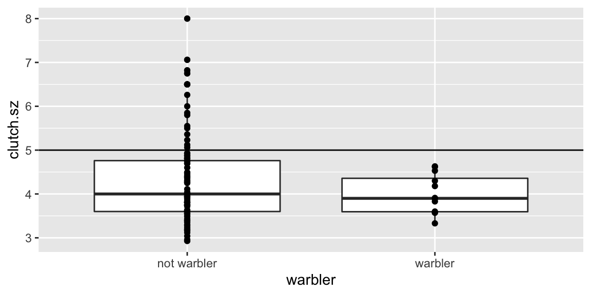
128.13 save ggplot
ggsave(...)